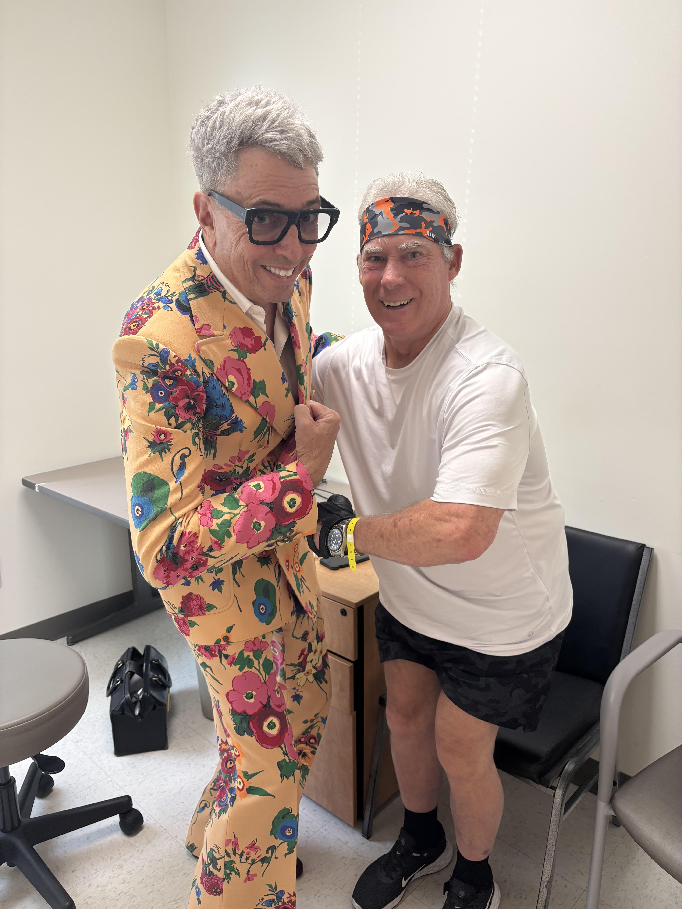

Lion's Mane for ALS: Can a Mushroom Help Nerve Growth?

Jon Edy, ALS Patient & Protocol Author
April 1, 2026 • 6 min read
When I first came across Lion's Mane mushroom in my research, I almost skipped it. A mushroom for neurodegeneration? It sounded like the kind of thing you see on wellness blogs next to essential oils and crystals. But then I started reading the actual science, and it got my attention fast.
Lion's Mane (Hericium erinaceus) contains compounds that stimulate the production of nerve growth factor. That is not marketing language. That is what the peer-reviewed research shows. And for someone with ALS, where motor neurons are dying, anything that supports nerve health is worth a hard look.
Why Lion's Mane Caught My Attention
The core of ALS is motor neuron death. Once a motor neuron dies, it does not come back. The muscles it controlled lose their signal and atrophy. That is the disease in a sentence.
Lion's Mane contains two unique compounds, hericenones and erinacines, that have been shown to stimulate the production of nerve growth factor (NGF) in the brain. NGF is a protein your body uses to grow, maintain, and repair nerve cells. It is essential for the survival of the neurons that ALS is destroying.
Now, I am not claiming Lion's Mane can regrow dead motor neurons. That is not realistic. But if it can support the neurons I still have, help them function better, and make them more resilient to the ongoing damage, that is worth the $30 a month it costs me.
I think of Lion's Mane as playing defense. HMB protects my muscles. L-Serine may slow the disease process. Lion's Mane supports the nerve cells themselves. Different layers of protection for different parts of the problem.
What the Research Says
The research on Lion's Mane and nerve health is surprisingly robust for a mushroom supplement. Most of it comes from cell studies and animal models, but there are human trials too.
A 2008 study by Mori and colleagues in Phytotherapy Research was one of the first to demonstrate that Lion's Mane extract stimulated NGF synthesis in human cell cultures. The active compounds (hericenones from the fruiting body) crossed into cells and triggered NGF production in a dose-dependent manner.
In animal models, a 2013 study published in the Journal of Agricultural and Food Chemistry showed that erinacines from Lion's Mane promoted nerve regeneration in rats with crushed peripheral nerves. The rats receiving Lion's Mane extract recovered motor function significantly faster than controls.
On the human side, a 2009 double-blind, placebo-controlled trial in older adults with mild cognitive impairment found that 16 weeks of Lion's Mane supplementation (3,000 mg/day) significantly improved cognitive function compared to placebo. When the subjects stopped taking it, their scores declined, suggesting the effect was directly tied to ongoing supplementation.
There is also emerging research on Lion's Mane and neuroinflammation. A 2015 study in Biomedicine and Pharmacotherapy found that Lion's Mane extract reduced inflammatory markers in the nervous system of mice. Since neuroinflammation is one of the drivers of ALS progression, that pathway is relevant.
Is there a clinical trial of Lion's Mane in ALS patients? No. Not yet. But the NGF stimulation, the nerve regeneration data, and the anti-neuroinflammatory properties all point in the same direction: this mushroom does something real for nerves.
How I Take It
I take Lion's Mane in two forms, which makes my total daily dose 4,000 mg:
- Capsules: Lion's Mane capsules from OM Mushrooms, taken in the evening, 3 to 4 times per week. This accounts for roughly 2,000 mg of my daily dose on the days I take them.
- Powder: Lion's Mane powder from OM Mushrooms (same brand), 1 scoop (2,000 mg) blended into my daily protein shake every morning. This is the consistent daily baseline.
The powder goes into the blender with Orgain protein, L-Serine, berries, and spinach. It adds a slight earthy flavor that the berries cover completely. If you have never used mushroom powder in a smoothie before, you genuinely will not taste it.
I like the two-form approach because the powder gives me consistent daily coverage and the capsules let me boost the dose on most days without adding another step to my morning routine. It is simple, and simple is what sticks when you are taking 23 supplements.
Where to Buy Lion's Mane
OM Mushrooms Lion's Mane Capsules
Organic, whole fruiting body mushroom. I take these in the evening 3-4x per week.
View at OM Mushrooms →OM Mushrooms Lion's Mane Powder
Same brand, powder form. 1 scoop (2,000 mg) goes in my daily protein shake. Dissolves clean, no strong taste.
View at OM Mushrooms →Important Notes
- Lion's Mane is not FDA-approved for ALS. It is a dietary supplement. No regulatory body has approved it for the treatment of any neurodegenerative disease.
- Most research is preclinical. The NGF stimulation and nerve regeneration studies were conducted in cell cultures and animal models. The human trials focused on cognitive function in older adults, not ALS patients.
- Quality matters with mushroom supplements. Not all Lion's Mane products are equal. Some use mycelium on grain (which is mostly starch) instead of the actual fruiting body. I use OM Mushrooms because they use whole fruiting body and are certified organic.
- I am not a doctor. I am an ALS patient who has lived with this disease for more than six years. Everything on this site is my personal experience and my personal reasoning. It is not medical advice.
- Talk to your physician. Before adding Lion's Mane to your routine, discuss it with your neurologist. It is generally well-tolerated, but your doctor should know about everything in your supplement stack.
- This is one piece of the puzzle. Lion's Mane is one of 23 supplements I take daily. No single supplement is a silver bullet. If you want the complete picture, check out the full protocol.
I started taking Lion's Mane because the nerve growth factor research was too compelling to ignore. A mushroom that makes your body produce more of the protein that keeps nerves alive? In a disease that kills nerves? That is the kind of thing I could not walk past. And at $30 a month with essentially no side effects, the risk-reward calculation was easy.
Want Jon's complete supplement stack?
Lion's Mane is one of 23 supplements in the full protocol. Get exact brands, doses, and daily timing.
Get the Protocol - $39